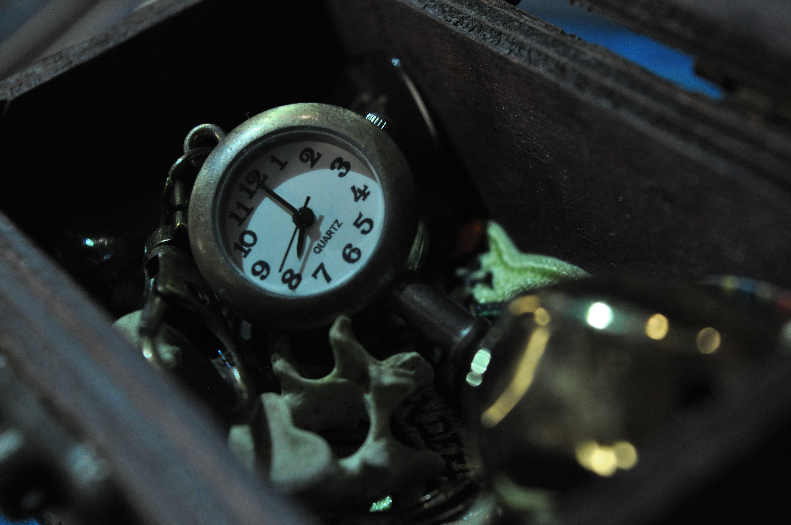
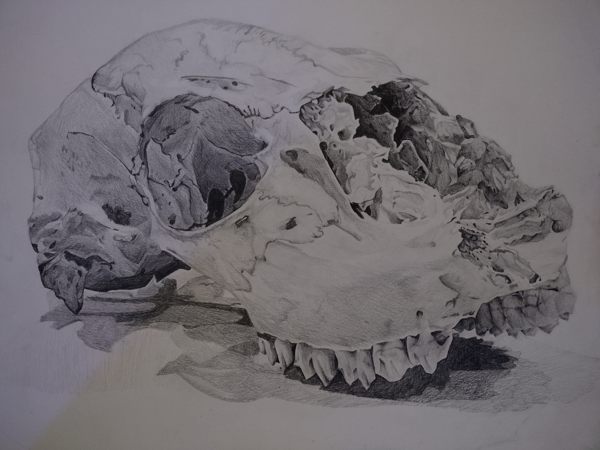
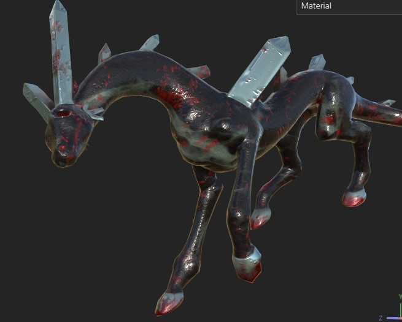

languages
c#
html/css/js
gdscript
glsl
programs
unity
photoshop
blender
maya
3ds max
substance painter
3d coat
godot
3d
hard modelling
texturing
organic modelling
rigging
animation
2d
pixel art
digital painting
character design
animation
click on the images to view text, or click this to show all
"Running out of time”
Jan. 5th 2026, photography, personal project

“Unknown Skull”
Mar. 8th 2023, graphite, class project

"Blood Demon"
May 13th 2025, 3D model, class

3 artifacts curator's note
These three artifacts reflect my thoughts on the temporarily of life. Time running out, consistent themes of bones and the human body, and death cross all three of them. The first, the key, is the bells chiming in the distance. The knowledge that death is inevitable. The second, the skull, is the aftermath. When our flesh has melted away and shown us to be only what we were on the inside. How we act in our day-to-day lives are temporary. The impacts we leave are what matters. Finally, the third, the crystalized blood demon, is the morbid reality that death can be something small and unseen, able to strike at any moment. There is no way of knowing if tomorrow will come or not. It's important to live how we want to be remembered, and leave lasting, positive impacts on those around us. The three artifacts being different mediums also reflects my views; we should spread ourselves out - but not thinly - to experience all life has to give us. Photography, graphite, and 3D modelling. Vastly different forms of creativity. The more experiences we have, the more it shapes us as people, writers, creatives, and thinkers. I'm currently reading The Secret History by Donna Tartt, and Richard's self-proclaimed "fatal flaw" resonated with me. "A morbid longing for the picturesque at all costs." How we choose to view the world warps and distorts our perspective and lasting memory, whether that be positive, or not.